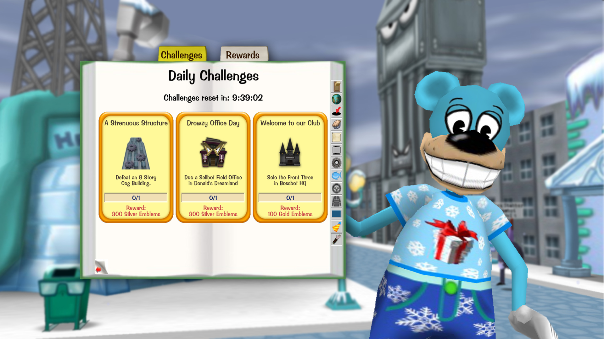
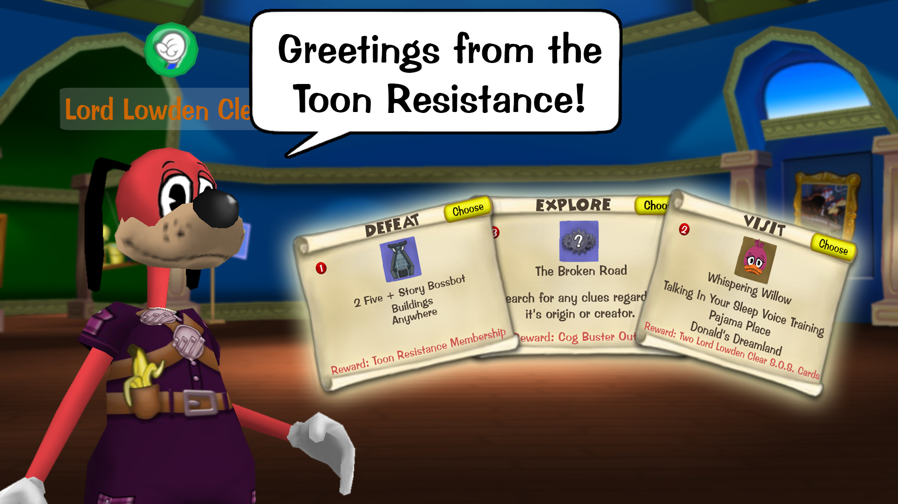

Introducing: Toontown Relived's 1.5 Update!
Posted by: The Toontown Relived Team on December 21, 2018 at 12:00 AM
Daily Challenges
It's been so long since Aversive showed us Daily Challenges and we totally didn't stop there! From that point on, we had completely revamped the challenge system to make it wackier and fun for everyone (even us!). To accommodate for the difficulty of these challenges, only Toons higher than 45 Laff Points can complete challenges. Guess what, if you didn't notice all challenges reset everyday at 2:00 AM Toontown Time (PST). You might be asking, "what's in it for me"? I asked myself the same thing! The Toon Resistance has driven a lot of those pesky Lawbot Field Offices out and we had more of the Cog's Sprockets than we knew what to do with! You can earn sprockets, named Emblems for your craving of wackiness, and buy prizes ranging from new houses for the Toon Estate, or even some Doodle Accessories! You heard me right! You can totally express your Doodle's personal style with a bunch of accessories.

The Story Conundrum
After a boring business trip to Lawbot Headquarters for some legal interference, Lord Lowden Clear has come back to Toontown and is offering 3 brand new ToonTasks in Toon Hall! With Mata Hairy busy in Cashbot H.Q., and Good Ol' Gil Giggles setting up an outpost in Donald's Dreamland, Lord Lowden Clear is in need of Toons who knows what it takes to be a Resistance Ranger. Can you figure out what big project the Cashbots are funding, investigate the mysterious Broken Road, or even go fish for the rarest of them all? Then you have what it takes to be a member of the Toon Resistance!

Technical Improvements
The Toon Council and our Top Toon Electricians have eased a whole bunch of oil spills left by the Cogs. The pipes under Toon Hall have received a lot more attention than it was previously given. What does this mean? Well, the website features ways to recover lost credentials, Toon name approval has been fully implemented, and so much more! Did we mention that Toontown Relived now features Mac OSX support?
What's in it for the future?
While working on this update, we had a whole bunch of new ideas that we want to bring into fruition for the game. It's only a matter of time before we reveal what's really going on behind the tunnel in Toontown Online and why the other Cog branches haven't received Field Offices. We'd like to end off by thanking everyone who has previously been apart of Toontown Relived's team and most importantly, YOU for sticking with us while making this update. We hope to be around a long time with a whole bunch of updates in between! So what are you waiting for, get online, grab some gags, and start exploring! This is only the start of a brand new adventure and we'd love for you to be apart it.